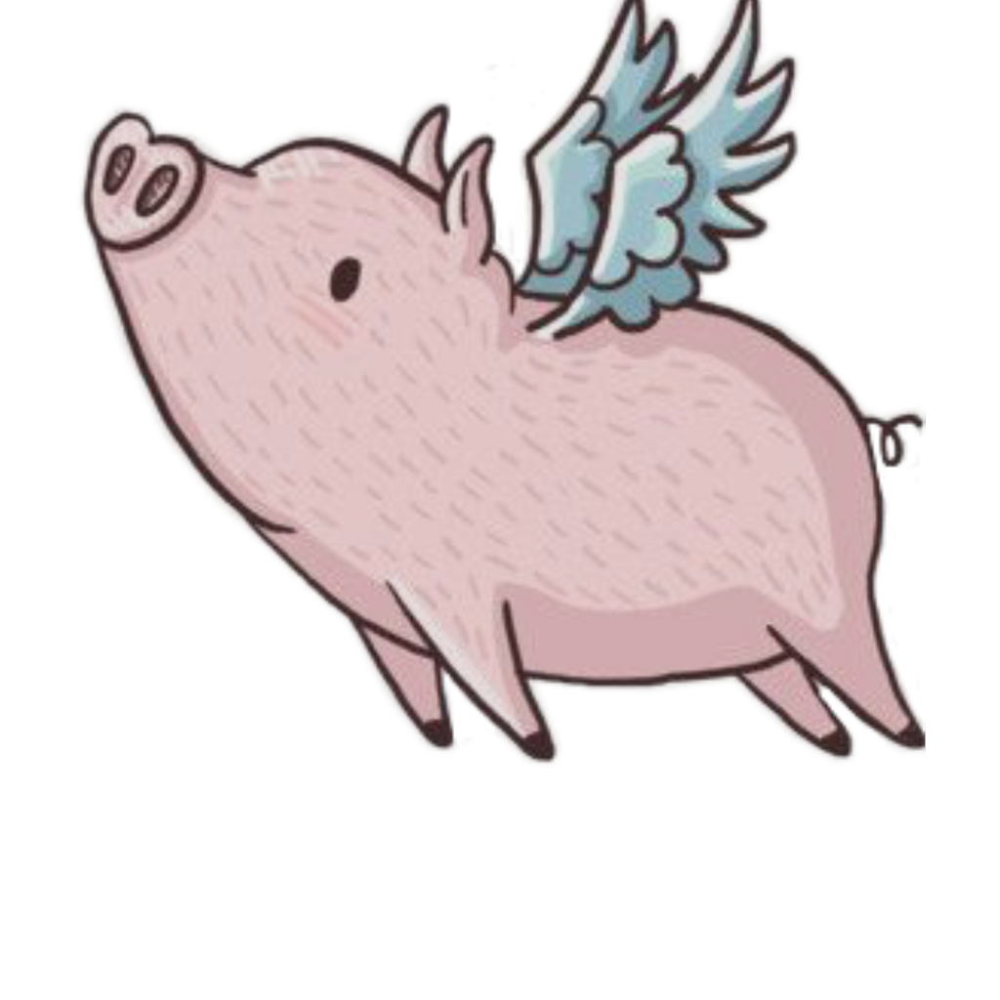

Web Bazar.
"Omnes sumus in canale, pauci autem ad astra vident"

Visualización interactiva de qué se dicta, dónde se repite y dónde se profundiza a lo largo de 4° a 7° año. Mapa mental, matriz de temas y explorador de progresión.
Abrir publicación → 🎨Obtené el valor de un resistor a partir de su código de colores. Para 4 y 5 bandas, con la tabla de colores y el proceso de cálculo paso a paso.
Abrir calculadora → 🔢Convertí entre prefijos del Sistema Internacional (pico, nano, micro, kilo…), decodificá el código de capacitores y copiá símbolos griegos y de electrónica.
Abrir herramienta → 🔀Curso interactivo: números binarios, compuertas (con integrados 40XX), constructor de circuitos con tabla de verdad, mapa de Karnaugh y simplificación, y lógica secuencial.
Abrir curso → ⏱️Astable y monoestable: elegí R y C y mirá cómo se carga y descarga el capacitor junto al gráfico de tiempo, con las ecuaciones, el diseño inverso y el datasheet.
Abrir simulador → 🔋De la alterna de red a una continua estable y ajustable: mirá cómo se transforma la señal en cada etapa, con las ecuaciones, el circuito y el datasheet.
Abrir simulador → 🔺De los fundamentos al amplificador de instrumentación: cada configuración con su esquema, su ecuación y el desarrollo matemático paso a paso de los cuatro amplificadores base.
Abrir tarjeta → 📻El código Q de los radioaficionados, el árbol que muestra cómo se arman las letras en Morse, y un entrenador de pulsador para practicar la clave con el teclado.
Abrir tarjeta → 🎓Plataforma para gestionar a mis estudiantes: actividades, entregas, calificaciones y material de clase. Acceso para estudiantes y profesor.
Entrar →